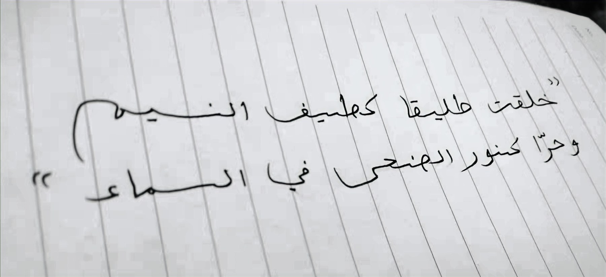

Zhu (Evan) Tang

“You were created free as the fleeting breeze, and unbound like the morning light across the sky.”
— Abu al-Qāsim al-Shābbi
Greetings! My name is Zhu / 铸 / إلياس. I am a graduate student completing an MA in History at the University of Alberta (expected in January 2027). My studies focus on Muslim interactions with colonial authorities, and the intellectual history of Sufi orders in Northwest Africa. Prior to my current program, I studied Religion (Global Islam) at the University of Florida from 2022 to 2024. I hold an MA in Arabic with a focus on Middle Eastern Studies from the University of International Business and Economics in Beijing, and a bachelor's degree in Arabic from Sun Yat-Sen University in Guangzhou, China. I also studied Arabic as an exchange student at Tanta University in Egypt in 2018–2019.
Outside of academia, I worked with iFlytek and Tencent as an Arabic proofreader and a Middle Eastern marketing intern. I also worked as a research assistant at the Chinese Academy of International Trade and Economic Cooperation in 2021, with a regional focus on the Middle East and Africa. Through my studies at the University of Florida and the University of Alberta, I held multiple TA and RA positions that involve teaching, social-science research, qualitative analysis, and administrative support at the university level.
My experiences across multiple institutions in China, Egypt, the US, and Canada have equipped me with skills in academic writing, teaching, research support, and program coordination. I look forward to bringing these skills to work that supports higher education, cross-cultural collaboration, and international engagement.